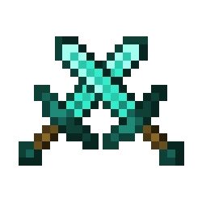
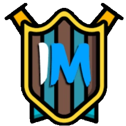
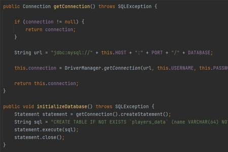

História a začiatky
Celé to začalo v roku 2018/19 kedy som sa učil hrať Minecraft. Hrával som prvej Survival, potom neskôr som prešiel na PvP a minihry na Survival-Games alebo na Qplay. Hrávali sme s kamarátom pomerne často a učil som sa hrať minihry a pvp. Hrával som to často a naozaj ma táto hra bavila a pomaly som sa v nej zlepšoval. Takto sme hrávali dlho rôzne minihry a skúšali sme aj iné servery. Potom sme sa zasa nachviľu presunuli na Survival za čias verzie 1.16.
Po možno dvoch rokoch hrania Minecraftu ma začalo veľmi lákať vytvoriť si vlastný Server. A tak sa mi to aj podarilo, urobil som si prvý Survival server na Aternose. Začal som pomaly spoznávať Server Softwary, pluginy, konfigurácie a pomaličky som sa učil. Bol som strašne moc šťastný že som si urobil vlastný Survival server. Potom prišiel čas na posun a namiesto Survival serveru som si urobil server na Aternose na minihry. Vďaka YouTube som si našiel Buildera a pomocného Technika s ktorým sme sa učili. Builder nám postavil mapu na BedWars a my sme pracovali s pluginom. Po nejakom čase sa to podarilo a mal som prvú minihru a to BedWars s vlastnou mapou! Taktiež som mal ešte aj SkyWars no tam už mapy boli stiahnuté z internetu. Vedľa môžete vidieť stream z tohoto servera.
Potom po týchto mojích súkromných serveroch prišla verzia 1.16. Spoločne so spolužiakmi sme sa rozhodli urobiť si Survival server kde budeme môcť spoločne hrať. Server bol hostovaný na Free hostingu "FreeMC.host" ktorý za tých čias fungoval naozaj dobre. Server bežal pomerne dobre aj keď občas bol nejaký problém. Server fungoval a my sme hrávali, volávali a užívali si. Postupne som aj pridával nejaké pluginy na zlepšenie hry, napríklad na vianoce som pridal plugin ktorý dal do hry particles ktoré naznačovali neustále sneženie a vytvárali atmosféru vianoc. Server vydržal dlho, potom sa už postupne prestával hrávať. Krásne spomienky. Z tohoto servera mám zopár záznamov. Jeden z tých lepších máte túto vedľa.
Prvý väčší Minecraft server
Keď som dokázal urobiť súkromný Minecraft Server na minihry tak prišiel čas a túžba vytvoriť server pre verejnosť. A na tom sa začalo pracovať spoločne s viacerými ľuďmi. Server sme hostovali na FreeMC.host a náš server sa volal DiamondGames. Server sa spustil 21.2. 2021. Lobby stiahnuté z internetu, no ďalšie mapy už boli stavané našími buildermi. Na servery sa nachádzali minihry ako KitPvP, BedWars a PaintBall. Minihry boli ako tak fajn ale kto by to čakal že na tom servery nebude hrať hneď minimálne 30 hráčov. Takže server umrel a pre mňa to bol veľký smútok. Nič sa nám nepodarilo zanechať, maximálne tento jeden záznam za čias spustenia tohoto servera.

O pár mesiacov sme sa skoro ty istý ľudia rozhodli že tento server obnovíme a pridáme množstvo nových vecí. Vytvorili sme Discord a na server sme pridali celkom dobrý SkyBlock, PaintBall, KitPvP a BedWars. Minihry z predošlého servera sme vylepšili a builderi nám postavili úplne nové Lobby. Krásne. Server sa spustil a opäť sa propagoval cez moje streamy ale aj na Vote stránkach. Bohužiaľ nemám žiaden záznam zo Streamov ale podarilo sa mi zanechať niektoré Minihry. Server začal že všetky minihry boli na jednom Spigot servery, no neskôr sme objavili BungeeCord a celý server prerobili do tohoto režimu. Servery furt bežali na hostingu FreeMC.host kde sme ale potrebovali viacero účtov na servery. Server aj rástol a darilo sa mu pomerne, no začal padať kvôli pomalému rozvoju. Na rozvoj a vylepšenia som bol sám a pôvodný Technici mi nepomáhali.
Po nejakom čase som musel server pozastaviť a vykonať obrovský update a vylepšenia aby sa server mohol posunúť. Zo servera sa odstránila minihra SkyBlock a pridal sa Survival z ktorého mám aj záznam vedľa. Survivalu sa naozaj darilo a prvé týždne tam hrávalo celkom dosť hráčov. No potom to znova začalo opadať lebo neprichádzalo moc noviniek a vlastne ten Survival bola kópia ako je na ďalších CZ/SK serveroch. Celý server začal upadať a ja som strácal čas sa tomuto venovať a sám som to nezvládal. Zároveň sa mi nepodarilo najsť schopných ľudí viesť so mnou tento Server. Takže to skončilo kompletným ukončením dejín DiamondGames. Bolo povedané že sa už nikdy neotvorí čo tak z polovice bola pravda.
Zmena z Majiteľa na Technika
Po určitej dobe mi práca ako Majiteľ/Technik začala chýbať pretože mi to robilo strašnú radosť a nesmierne ma to bavilo. No server som už robiť nechcel pretože som vedel že potrebujem kapitál a ľudí čo ja nemám. Tak som hľadal nábor na pozíciu Technik a našla sa jedna miestenka na InsaneManií kde sa začali písať nové dejiny. Postupom času som tam rástol a rástlo tam aj moje meno keďže som server posúval vpred a urobil na Majiteľov perfektný dojem. InsaneMania bol server ktorý bol na tom s počtom hráčov nejak rovnako možno trocha lepšie ako DiamondGames. Pracoval som tam a pracoval a server rástol a posúval sa vpred.
Neskôr ale došlo k tomu že Majitelia sa na prácach na Minecraft vykašlali a pracovali na niečom inom čo vyvrcholilo že server veľmi padal a ja som ho nemohol zachrániť. Potom došlo k tomu že som ako Technik odišiel a chcel som znova rozbehnúť DiamondGames už tretí krát. V tom ale po pár dňoch prišla špeciálna ponuka a to že môžem byť ako majiteľ Minecraft Servera InsaneManie a starať sa o to. Zobral som to a tak sa práce na DiamondGames presunuli na InsaneManiu. Tam sa server rozbehol a darilo sa mu celkom ale po nejakej dobe to znova začalo padať. Vznikali rôzne problémy ktoré sa ťažko riešili, problémy s Webom, problémy s VPS apod.. Ja som k týmto veciam prístup nemal a nemohol som ich opravovať.
Došlo aj k problémom medzi mnou a hlavnými majiteľmi. Vznikali ďalšie a ďalšie problémy a to ako na servery, tak aj medzi nami. Až to skončilo tým že som ako Majiteľ skončil a InsaneMania definitívne padla. Teda ako Minecraft Server. Za ten čas som tu nazbieral veľa skúsenosti čiže vo finále som za to rád. Tu ale prišiel zlomový bod kedy som si povedal že s týmto treba skončiť a treba ísť iným smerom vpred a posunúť sa. Tak som sa na Technika vykašlaľ a začal sa venovať programovaniu a prácach okolo toho ktoré by ma za určitý čas mohli dostať ku programovaniu vlastných Pluginov.

Ako som na tom teraz a aké su plány?
Pomocou kurzou sa mi podarilo naučiť programovať pluginy do Minecraftu. Už trojo pluginov sa mi podarilo vytvoriť. Pluginy ma aj baví tvoriť ale aktuálne ako samotný Minecraft padá, aj market s Pluginmy a mapami ide dosť dole. Taktiež moje zlaté Minecraft časi kedy som sa mu venoval a hral skončili a vydal som sa iným smerom. Už ma to tak nenapĺňa ako kedysi. Nehovorím že sa tvoreniu pluginov venovať nebudem a že pluginy žiadne nevytvorím, to zasa nie. Ale není zo žiadna z mojich priorít. Je to skôr len niečo čo robím bokom. Na mojich účtoch predávam Minecraft mapy z mojich serverov a zároveň tam sú aj moje pluginy. Koho to zaujíma, môže si to ormknúť na platformách nižšie.

Čo sa týka Minecraft Serverov tak aj mi také časy chýbaju, no teraz viem že na CZ/SK scéne je veľmi ťažké sa presadiť a vo finále pre mňa by to bola len finančná strata. Radšej sa chcem venovať programovaniu pluginov ktoré by mi mohli aj niečo privyrobiť a zároveň mne to zlepší schopnosť programovania. Chcem sa uberať týmto smerom, no ešte nehovorim úplne že sa nikdy k Minecraft serverom nevrátim. No je to veľmi nepravdepodobné. Taktiež samotnú hru už tak moc nehrávam, veľmi málokedy. Ale uvidíme čo život prinesie, zatiaľ sa chcem vzdelávať a skúšať programovať pluginy ktoré by sa mohli zisť iným ľuďom, popripáde robiť pluginy na dohodu.